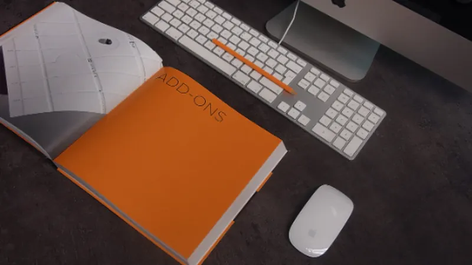

立場別・論点別に読む
実物資料と解説へ、迷わず進むための入口です。

保護者
保護者の方へ
入会、退会、会費、個人情報を家庭の立場から確認します。

PTA運営
PTA役員の方へ
会員管理、会費徴収、個人情報、学校との分離を整理します。

学校・教育委員会
学校・教育委員会の方へ
配布、徴収、服務、施設利用、個人情報の論点を確認します。
一次資料
実物PTA資料庫
各地から取得した入会案内、徴収文書、会計資料を整理します。
自治体回答
教育委員会回答DB
自治体・教育委員会の回答を、論点別に追えるようにします。

制度整備
教育委員会向け指針
通知・指導・施設利用・学校関与の整理に使うページです。
契約
入会意思確認
みなし加入を避け、入会記録を確認するための論点です。

会計
会費徴収
学校徴収金とPTA会費の混同、代理徴収、委任を確認します。
個人情報
個人情報
学校からPTAへの情報提供、目的外利用、同意の問題を確認します。
服務
教職員関与
勤務時間内PTA事務、職務専念義務、職専免の整理です。
検索
サイト内検索
自治体名、学校名、論点名から関連ページを探せます。

支援
調査活動を支援する
公文書開示、資料整理、現地確認、Web公開への支援窓口です。
お知らせ
Topics
調査・公開活動を支援する
公文書開示、資料整理、現地確認、Web公開を継続するための支援ページです。